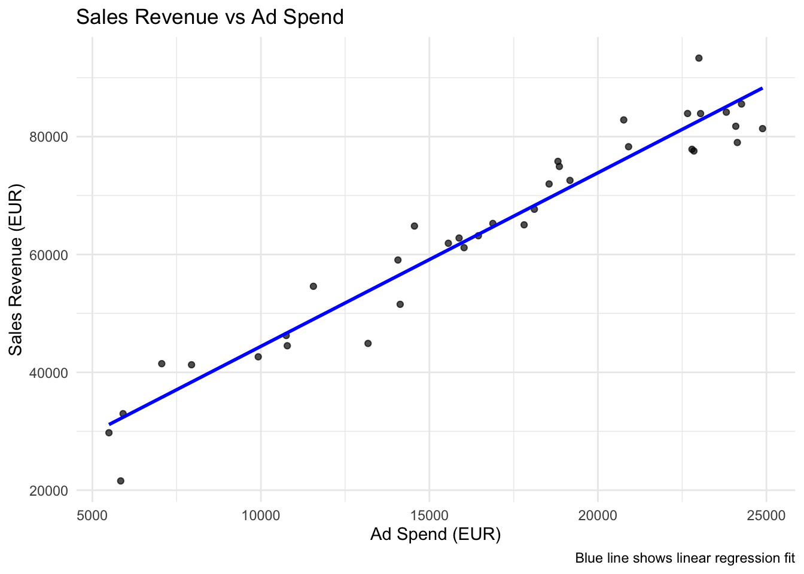
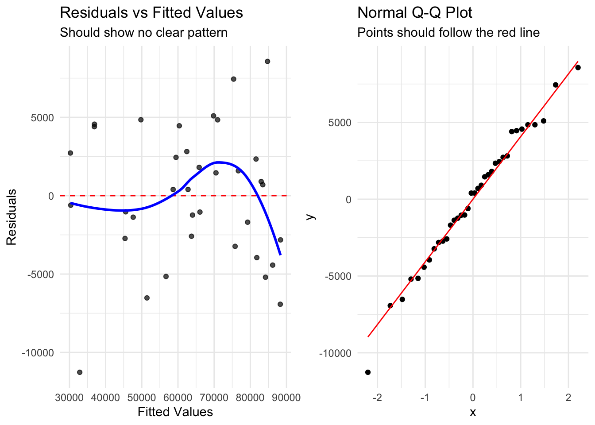
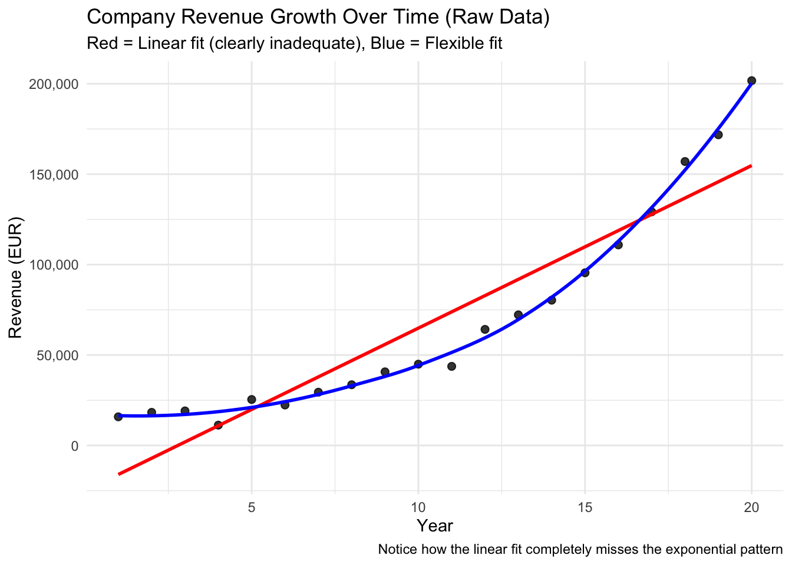
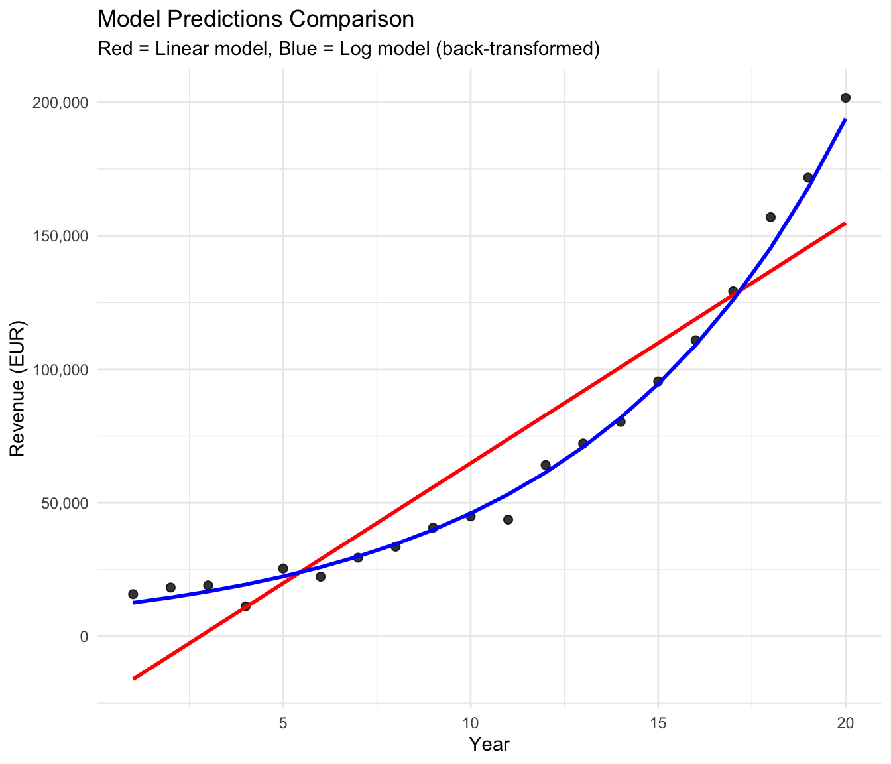
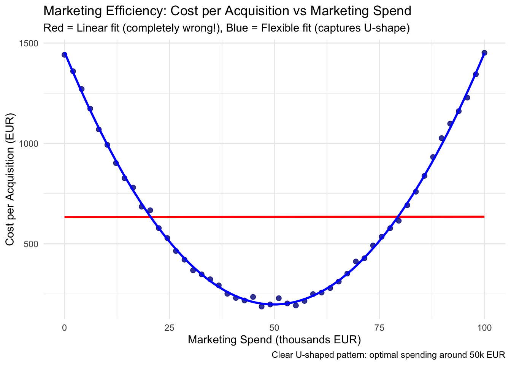
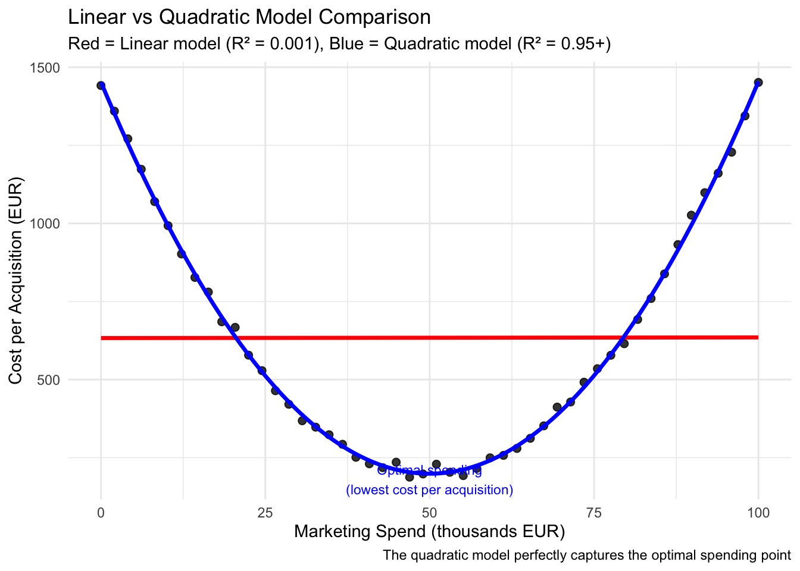
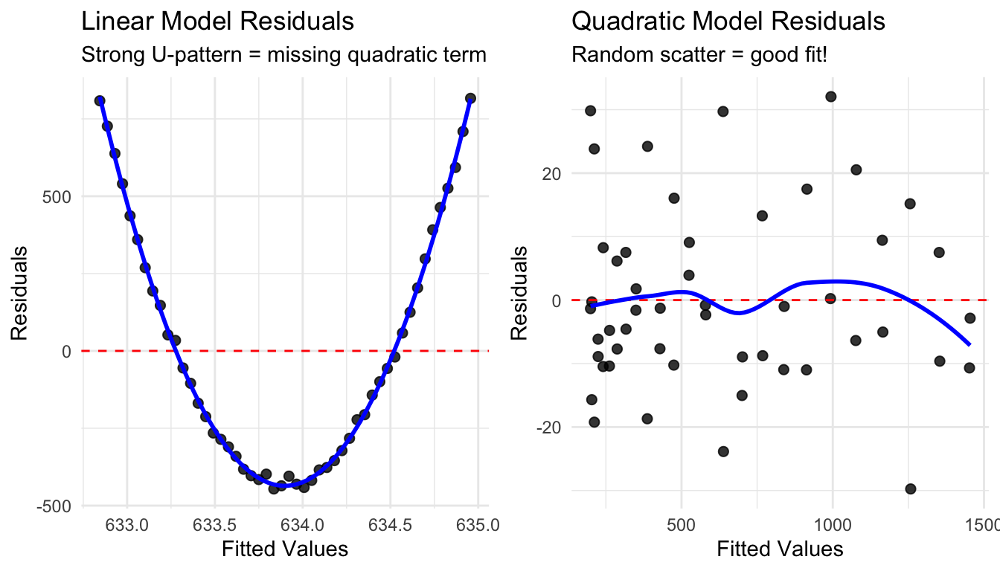

In this lab, we will focus on the practical aspects of implementing linear regression models in R. The lab complements the respective lecture, but extends it by going from simple linear regression to multiple regression. We’ll also explore how to handle non-linear relationships through data transformation practically and discuss the important concept of omitted variable bias, something that was not part of the lecture itself.
Learning Objectives
By the end of this lab, you will be able to:
Implement simple and multiple linear regression in R
Calculate and interpret \(R^2\) manually and using R functions
Understand and demonstrate omitted variable bias
Perform data transformations to linearize relationships
Create effective visualizations using geom_smooth()
Conduct basic model diagnostics
Prerequisites
Basic understanding of linear regression concepts from lecture
Familiarity with R and RStudio, as developed in previous labs
Understanding of basic statistical concepts (mean, variance, correlation), as provided by the statistics recap tutorials
Setup and Data
Loading Required Packages
In this lab we will use the following libraries:
Show R code
# Load required packages explicitlylibrary(ggplot2) # For data visualizationlibrary(dplyr) # For data manipulationlibrary(readr) # For reading CSV fileslibrary(moderndive) # For regression tableslibrary(broom) # For model summarieslibrary(here) # For file pathslibrary(kableExtra) # For nice HTML tables, optional for you
Loading the Datasets
For this lab, we’ll work with the following business data sets that demonstrate different aspects of regression analysis. They are available via the lab webpage.
Show R code
# Load the three datasets using here packagemarketing_data <-read_csv("marketing_roi.csv")pricing_data <-read_csv("pricing_strategy.csv")hr_data <-read_csv("hr_salaries.csv")firm_growth_data <-read_csv("firm_growth.csv")marketing_efficiency_data <-read_csv("marketing_efficiency.csv")
Simple Linear Regression
Let’s start with the fundamentals of simple linear regression using the marketing dataset. It is always a good idea to first inspect the data set you are using:
To fit a linear regression model we use the function lm() (which stands for “linear model”). Here we conduct a regression with sales revenue as the dependent, and ad spending as the independent variable:
To this end we specify the LHS and RHS of the regression equation, separated by a ~, through the argument formula. The variable names must be the same as in the data set we use, and which we specify through the argument data:
Show R code
# Simple regression: Sales Revenue ~ Ad Spendmodel_simple <-lm(formula = sales_revenue ~ ad_spend, data = marketing_data)model_simple
You can get additional information by using the function summary() on the resulting object, or the function get_regression_table from the package moderndive:
Show R code
# Display results using moderndive for clean outputget_regression_table(model_simple) %>%kable(caption ="Simple Linear Regression: Sales Revenue ~ Ad Spend") %>%kable_styling(bootstrap_options =c("striped", "hover", "condensed"))
Simple Linear Regression: Sales Revenue ~ Ad Spend
term
estimate
std_error
statistic
p_value
lower_ci
upper_ci
intercept
14969.808
2351.591
6.366
0
10190.801
19748.815
ad_spend
2.945
0.133
22.139
0
2.674
3.215
Interpreting the basic regression model
We estimated two main parameters of interest, the intercept \(\beta_0\) and the slope \(\beta_1\):
Show R code
# Extract key values for interpretationintercept <-round(coef(model_simple)[1], 0)slope <-round(coef(model_simple)[2], 3)
In our fitted model we have:
\(\hat{\beta_0}=\) 1.497^{4}
\(\hat{\beta_1}=\) 2.945
The means that:
Base Revenue: Even without advertising, we can expect a baseline revenue of 14,970 EUR (although intercepts must be interpreted with great care)
Return on Investment: Every EUR spent on advertising is associated with on average approximately 2.94 EUR in additional sales revenue
For more details, see the accompanying lecture.
Visualizing the Regression
One of the most useful features of ggplot2 is the geom_smooth() function, which can automatically fit and display regression lines:
Show R code
# Create scatter plot with regression lineggplot(marketing_data, aes(x = ad_spend, y = sales_revenue)) +geom_point(alpha =0.7) +geom_smooth(method ="lm", se =FALSE, color ="blue", linewidth =1) +labs(title ="Sales Revenue vs Ad Spend",x ="Ad Spend (EUR)",y ="Sales Revenue (EUR)",caption ="Blue line shows linear regression fit" ) +theme_minimal()

Understanding geom_smooth()
method = "lm" fits a linear model
se = FALSE removes the confidence interval bands
se = TRUE (default) shows 95% confidence intervals
You can also use method = "loess" for flexible, non-parametric fits
Multiple Linear Regression
Real-world relationships often involve multiple variables. Let’s extend our model to include website traffic.
Adding a Second Predictor
Conceptually, we are now estimating the following model:
In the multiple regression framework the interpretation of the coefficients changes slightly, as we now estimate ceteris paribus effects, sometimes also called direct effects, in contrast to the total association that was our focus in the simple regression framework.
More precisely, the estimates in the multiple regression framework control for changes in the other variables. The means that these are the changes we can expect in the dependent variable, if the independent variable changed by one unit, and all other variables stayed the same.
More precisely:
\(\hat{\beta_1}=\) 2.216 means that for every increase of 1 EUR in ad spending, there is an associated increase of revenue of, on average and ceteris paribus, 2.216 EUR.
\(\hat{\beta_2}=\) 0.985 means that every increase of website traffic by 1 person is an associated with an increase of revenue of, on average and ceteris paribus, 0.985 EUR.
Note that the indirect effect of ad spending is different to the direct effect estimated! More precisely, the direct effect of advertising (2.216 EUR) is smaller than the total effect (2.945 EUR) because some of advertising’s impact works through increased website traffic, and the multiple regression framework helps us to identify these different channels.
We also say that the simple regression model was confounding the effects of ad spend and website traffic!
Omitted Variable Bias
This brings is to one of the most important concepts in regression analysis: omitted variable bias. It occurs when both of the following conditions are met:
There is a variable that correlates with our dependent variable and…
also correlates with one of our independent variables.
The Theory
When we omit a relevant variable from our regression, the coefficients of included variables become biased. The bias depends on:
How strongly the omitted variable affects the outcome
How correlated the omitted variable is with included variables
Example 1: Marketing Data - Coefficient Size Change
In our previous example, \(\hat{\beta}_1\) for the simple model was 2.94 and for the multiple model it was 2.22, meaning that we have a total bias of 0.73.
Since website traffic is positively correlated with ad spend AND positively affects sales, the simple model overestimates the effect of ad spend.
Example 2: When Coefficients Change Sign Completely
Sometimes omitted variable bias is so severe that it completely changes the direction of the relationship. Let’s look at the first example of the lecture, the analysis of beer consumption:
Correct conclusion (multiple model): “Higher-income customers drink more beer, but they’re price-sensitive - consider premium pricing strategies”
The simple regression result could lead to disastrous policy decisions!
Model Diagnostics
Good regression analysis doesn’t stop at fitting the model. We need to check our assumptions and test how good the model explains the dependent variable.
The explanatory power: \(R^2\)
\(R^2\) measures the proportion of variation in the dependent variable explained by our model.
It is defined as the ratio between the total variation (‘Total Sum of Squares’) and the explained variation. Since the residuals are our measure for unexplained variation (see the lecture), we can compute \(R^2\) by the following formula:
\[R^2 = 1- \frac{RSS}{TSS}\]
Let’s calculate it manually to understand what it means.
Show R code
# Get the actual and fitted valuesy_actual <- marketing_data$sales_revenuey_fitted <-predict(model_simple)y_mean <-mean(y_actual)# Calculate the componentsTSS <-sum((y_actual - y_mean)^2) # Total Sum of SquaresRSS <-sum((y_actual - y_fitted)^2) # Residual Sum of Squares# Calculate R²r_squared_manual <-1- (RSS / TSS)cat("Manual R² calculation:", round(r_squared_manual, 4), "\n")
The \(R^2\) of the simple model is 0.9351. This means that this model explains 0.94 % of the variation in the dependent variable.
The \(R^2\) of the multiple model is 0.9437. This means that this model explains 0.94 % of the variation in the dependent variable.
But be careful: a higher \(R^2\) does not necessarily imply better prediction or inference capability of the model!
Key Diagnostic Plots
The most important assumptions of linear regression are about the nature of the error term \(\epsilon\). But as discussed previously, the error term is located on the population level, meaning it will always remain unobservable. Therefore, we usually inspect its sample equivalent, the residuals, to test the most important assumptions.
The two most important assumptions are:
The error term is uncorrelated with the dependent variable.
The error follows a normal distribution with mean zero.
To test assumption 1, we can look at the correlation between residuals and fitted values. If our model is good, we should see no structure.
To test assumption 2, we can look at a so called QQ-plot. QQ stands for quantile-quantile. Such a plot plots the quantiles of the data (here: residuals) against the theoretical quantiles if the data was following a normal distribution. If the residuals are normally distributed, they should follow a straight line.
Show R code
# Create augmented data with fitted values and residualsmarketing_augmented <-augment(model_multiple)# Tukey-Anscombe Plot (Residuals vs Fitted)p1 <-ggplot(marketing_augmented, aes(x = .fitted, y = .resid)) +geom_point(alpha =0.7) +geom_hline(yintercept =0, linetype ="dashed", color ="red") +geom_smooth(se =FALSE, color ="blue") +labs(title ="Residuals vs Fitted Values",x ="Fitted Values",y ="Residuals",subtitle ="Should show no clear pattern" ) +theme_minimal()# Normal Q-Q Plotp2 <-ggplot(marketing_augmented, aes(sample = .resid)) +stat_qq() +stat_qq_line(color ="red") +labs(title ="Normal Q-Q Plot",subtitle ="Points should follow the red line" ) +theme_minimal()gridExtra::grid.arrange(p1, p2, ncol =2)

In this example we see that both assumptions seem to be satisfied, although some small structure in the residuals persist. In the end, there is no clear-cut rule when there is no structure, but it is usually difficult to do an even better job as in this example.
Data Transformation for Non-linear Relationships
Not all relationships are linear! But remember that for linear regression, we only need to assume linearity in parameters! This means that sometimes we can transform our data to make initially non-linear relationships linear and still use linear regression effectively.
When to Transform Data
Common scenarios requiring transformation:
Exponential relationships: Often seen with salary/experience, population growth
U-shaped relationships: Common in economics (e.g., effort vs performance)
Diminishing returns: Sales response to advertising often follows this pattern
In practice, always visualize your data first and experiment with various transformation strategies - this is the best way to determine whether data transformation can help you.
Also, the diagnostic plots discussed above can also provide hints on necessary transformations: if the Tukey-Anscombe plot shows structure, think about transforming the data!
Log Transformation Example
Let’s examine a company’s revenue growth over time - a classic example of exponential growth that appears linear after log transformation:
Show R code
# First, visualize the raw exponential relationshipggplot(firm_growth_data, aes(x = year, y = revenue)) +geom_point(size =2, alpha =0.8) +geom_smooth(method ="lm", se =FALSE, color ="red", linewidth =1) +geom_smooth(method ="loess", se =FALSE, color ="blue", linewidth =1) +labs(title ="Company Revenue Growth Over Time (Raw Data)",subtitle ="Red = Linear fit (clearly inadequate), Blue = Flexible fit",x ="Year",y ="Revenue (EUR)",caption ="Notice how the linear fit completely misses the exponential pattern" ) +scale_y_continuous(labels = scales::comma) +theme_minimal()

The exponential pattern is very clear! The red linear line completely fails to capture the relationship. Let’s try a log transformation:
Show R code
# Create log-transformed variablefirm_growth_data_log <- firm_growth_data %>%mutate(log_revenue =log(revenue))# Fit both modelsmodel_linear_exp <-lm(revenue ~ year, data = firm_growth_data)model_log_exp <-lm(log_revenue ~ year, data = firm_growth_data_log)# Visualize the log-transformed relationshipggplot(firm_growth_data_log, aes(x = year, y = log_revenue)) +geom_point(size =2, alpha =0.8) +geom_smooth(method ="lm", se =FALSE, color ="blue", linewidth =1) +labs(title ="Log(Revenue) vs Year",subtitle ="Perfect linear relationship after transformation!",x ="Year",y ="Log(Revenue)",caption ="The transformation successfully linearizes the exponential relationship" ) +theme_minimal()
When you transform data, you need to interpret your results accordingly. For instance, when the dependent variable is log-transformed, coefficients represent percentage changes:
Every year is, on average, associated with a
14.4 % increase in revenue.
Why Log Transformation Works for Exponential Data
Exponential relationships have the form: \(Y = A \cdot e^{Bx}\)
Taking the natural log: \(\ln(Y) = \ln(A) + Bx\)
This transforms the exponential curve into a straight line where: - The slope B represents the growth rate - \(e^B - 1\) gives the percentage change per unit increase in x
The residual analysis discussed below can reveal how much better to log model performs in this context. But also by plotting the model on the raw data already makes this very clear:
Show R code
# Show predictions on original scaleexp_predictions <- firm_growth_data %>%mutate(linear_pred =predict(model_linear_exp),log_pred =exp(predict(model_log_exp, newdata = firm_growth_data_log)) )p3 <-ggplot(exp_predictions, aes(x = year)) +geom_point(aes(y = revenue), size =2, alpha =0.8) +geom_line(aes(y = linear_pred), color ="red", linewidth =1) +geom_line(aes(y = log_pred), color ="blue", linewidth =1) +labs(title ="Model Predictions Comparison",subtitle ="Red = Linear model, Blue = Log model (back-transformed)",x ="Year", y ="Revenue (EUR)") +scale_y_continuous(labels = scales::comma) +theme_minimal()p3

Quadratic Relationships
Sometimes relationships are U-shaped or inverted-U shaped. A perfect example is marketing efficiency: too little spending is inefficient (high fixed costs), and too much spending leads to diminishing returns. Let’s explore this dramatic pattern:
Show R code
# First, visualize the clear U-shaped relationshipggplot(marketing_efficiency_data, aes(x = marketing_spend, y = cost_per_acquisition)) +geom_point(size =2, alpha =0.8, color ="darkblue") +geom_smooth(method ="lm", se =FALSE, color ="red", linewidth =1) +geom_smooth(method ="loess", se =FALSE, color ="blue", linewidth =1) +labs(title ="Marketing Efficiency: Cost per Acquisition vs Marketing Spend",subtitle ="Red = Linear fit (completely wrong!), Blue = Flexible fit (captures U-shape)",x ="Marketing Spend (thousands EUR)",y ="Cost per Acquisition (EUR)",caption ="Clear U-shaped pattern: optimal spending around 50k EUR" ) +theme_minimal()

The U-shaped pattern is unmistakable! Now let’s compare linear vs quadratic models:
Show R code
# Create squared term for quadratic modelmarketing_efficiency_data <- marketing_efficiency_data %>%mutate(marketing_spend_squared = marketing_spend^2)# Fit both modelsmarketing_linear <-lm(cost_per_acquisition ~ marketing_spend, data = marketing_efficiency_data)marketing_quadratic <-lm(cost_per_acquisition ~ marketing_spend + marketing_spend_squared, data = marketing_efficiency_data)# Show regression resultscat("=== LINEAR MODEL (completely inadequate) ===\n")
Now let’s visualize both model fits to see the dramatic difference:
Show R code
# Create predictions for smooth curvesmarketing_range <-seq(0, 100, length.out =100)pred_data <-tibble(marketing_spend = marketing_range,marketing_spend_squared = marketing_range^2)# Get predictionspred_data$linear_pred <-predict(marketing_linear, newdata = pred_data)pred_data$quadratic_pred <-predict(marketing_quadratic, newdata = pred_data)# Create comprehensive comparison plotggplot(marketing_efficiency_data, aes(x = marketing_spend, y = cost_per_acquisition)) +geom_point(size =2, alpha =0.8, color ="black") +geom_line(data = pred_data, aes(y = linear_pred), color ="red", linewidth =1.2) +geom_line(data = pred_data, aes(y = quadratic_pred), color ="blue", linewidth =1.2) +labs(title ="Linear vs Quadratic Model Comparison",subtitle ="Red = Linear model (R² = 0.001), Blue = Quadratic model (R² = 0.95+)",x ="Marketing Spend (thousands EUR)",y ="Cost per Acquisition (EUR)",caption ="The quadratic model perfectly captures the optimal spending point" ) +annotate("text", x =50, y =180, label ="Optimal spending\n(lowest cost per acquisition)", hjust =0.5, color ="blue", size =3) +theme_minimal()

Understanding Quadratic Interpretation
With quadratic terms, interpretation becomes more nuanced because the effect of the variable changes depending on its current level:
Show R code
# Extract coefficients for interpretationlinear_coef <-coef(marketing_quadratic)["marketing_spend"]quadratic_coef <-coef(marketing_quadratic)["marketing_spend_squared"]cat("=== COEFFICIENT INTERPRETATION ===\n")
=== COEFFICIENT INTERPRETATION ===
Show R code
cat("Linear term coefficient:", round(linear_coef, 3), "\n")
Linear term coefficient: -50.157
Show R code
cat("Quadratic term coefficient:", round(quadratic_coef, 4), "\n\n")
Quadratic term coefficient: 0.5018
Show R code
# Find the optimal point (minimum of the parabola)optimal_spend <--linear_coef / (2* quadratic_coef)cat("Optimal marketing spend:", round(optimal_spend, 1), "thousand EUR\n")
Optimal marketing spend: 50 thousand EUR
Show R code
# Calculate minimum cost per acquisitionoptimal_cost <-predict(marketing_quadratic, newdata =tibble(marketing_spend = optimal_spend,marketing_spend_squared = optimal_spend^2))cat("Minimum cost per acquisition:", round(optimal_cost, 0), "EUR\n")
Minimum cost per acquisition: 199 EUR
Marginal Effects in Quadratic Models
The marginal effect (slope) at any point is: Linear coefficient + 2 × Quadratic coefficient × X
Show R code
# Calculate marginal effects at different spending levelsspending_levels <-c(20, 40, 50, 60, 80)marginal_effects <- linear_coef +2* quadratic_coef * spending_levelsmarginal_table <-tibble(`Spending Level (k EUR)`= spending_levels,`Marginal Effect`=round(marginal_effects, 3),`Interpretation`=case_when( marginal_effects <-0.1~"Strong efficiency gains from more spending", marginal_effects >0.1~"Diminishing returns - reduce spending", TRUE~"Near optimal - small changes have little effect" ))marginal_table %>%kable(caption ="Marginal Effects at Different Spending Levels") %>%kable_styling(bootstrap_options =c("striped", "hover", "condensed"))
Marginal Effects at Different Spending Levels
Spending Level (k EUR)
Marginal Effect
Interpretation
20
-30.086
Strong efficiency gains from more spending
40
-10.015
Strong efficiency gains from more spending
50
0.021
Near optimal - small changes have little effect
60
10.057
Diminishing returns - reduce spending
80
30.128
Diminishing returns - reduce spending
Tip
Understanding Quadratic Models
The quadratic model equation: Cost = β₀ + β₁×Spend + β₂×Spend²
Key insights:
Linear term (β₁ = -50.157): The initial direction of the relationship
Quadratic term (β₂ = 0.5018): How the slope changes
Positive β₂ → U-shaped (costs increase at extremes)
Negative β₂ → Inverted-U (optimal point in middle)
Optimal point: Where marginal effect = 0
Business implication: There’s a “sweet spot” for efficiency
Practical Business Application
Show R code
# Create a strategy table based on current spendingcurrent_scenarios <-tibble(`Current Spending`=c("10k EUR", "30k EUR", "50k EUR", "70k EUR", "90k EUR"),`Predicted Cost`=round(predict(marketing_quadratic, newdata =tibble(marketing_spend =c(10, 30, 50, 70, 90),marketing_spend_squared =c(10, 30, 50, 70, 90)^2)), 0),`Recommendation`=c("Increase spending significantly","Increase spending moderately", "Optimal level - maintain","Reduce spending moderately","Reduce spending significantly" ),`Rationale`=c("Far from optimum, high potential gains","Below optimum, efficiency improvements available","At optimal point for efficiency","Above optimum, diminishing returns setting in","Far above optimum, wasting resources" ))current_scenarios %>%kable(caption ="Strategic Recommendations Based on Quadratic Model") %>%kable_styling(bootstrap_options =c("striped", "hover", "condensed")) %>%row_spec(3, bold =TRUE, color ="green") # Highlight optimal
Strategic Recommendations Based on Quadratic Model
Current Spending
Predicted Cost
Recommendation
Rationale
10k EUR
1001
Increase spending significantly
Far from optimum, high potential gains
30k EUR
399
Increase spending moderately
Below optimum, efficiency improvements available
50k EUR
199
Optimal level - maintain
At optimal point for efficiency
70k EUR
400
Reduce spending moderately
Above optimum, diminishing returns setting in
90k EUR
1002
Reduce spending significantly
Far above optimum, wasting resources
Residual Analysis Comparison
Show R code
# Compare residual patternslibrary(gridExtra)# Linear model residuals - should show clear patternp1 <- marketing_efficiency_data %>%mutate(fitted =fitted(marketing_linear), residuals =residuals(marketing_linear)) %>%ggplot(aes(x = fitted, y = residuals)) +geom_point(size =2, alpha =0.8) +geom_hline(yintercept =0, color ="red", linetype ="dashed") +geom_smooth(se =FALSE, color ="blue") +labs(title ="Linear Model Residuals", subtitle ="Strong U-pattern = missing quadratic term",x ="Fitted Values", y ="Residuals") +theme_minimal()# Quadratic model residuals - should be randomp2 <- marketing_efficiency_data %>%mutate(fitted =fitted(marketing_quadratic), residuals =residuals(marketing_quadratic)) %>%ggplot(aes(x = fitted, y = residuals)) +geom_point(size =2, alpha =0.8) +geom_hline(yintercept =0, color ="red", linetype ="dashed") +geom_smooth(se =FALSE, color ="blue") +labs(title ="Quadratic Model Residuals", subtitle ="Random scatter = good fit!",x ="Fitted Values", y ="Residuals") +theme_minimal()gridExtra::grid.arrange(p1, p2, ncol =2)

Business Interpretation
The quadratic model reveals important business insights:
Optimal spending: Around 50k EUR gives the lowest cost per acquisition
Efficiency curve: Both under-spending and over-spending are inefficient
Marginal effects: The impact of additional spending depends on current spending level
Strategic implications: There’s a “sweet spot” for marketing efficiency
Your Turn
How would you interpret the linear and quadratic coefficients in business terms?
At what spending levels is marketing particularly inefficient?
What would happen if we used the linear model for business decisions?
Practical Exercises
Exercise 1: Complete HR Analysis
Analyze the relationship between experience and salary, controlling for education level:
Show R code
# Your turn: Create dummy variables for education and run multiple regressionhr_with_dummies <- hr_data %>%mutate(master =ifelse(education =="Master", 1, 0),phd =ifelse(education =="PhD", 1, 0)# Bachelor's degree is the reference category )# Fit the multiple regression modelhr_multiple <-lm(salary ~ experience + master + phd, data = hr_with_dummies)get_regression_table(hr_multiple) %>%kable(caption ="Multiple Regression: Salary ~ Experience + Education") %>%kable_styling(bootstrap_options =c("striped", "hover", "condensed"))